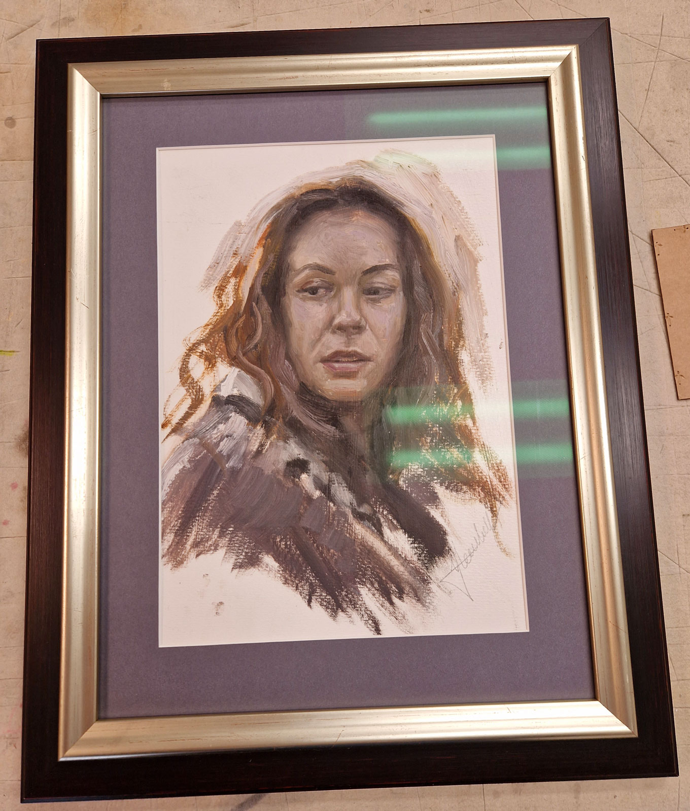
Aisha
Een voorbeeld waarin de lijst het werk ondersteunt zonder de verstilling te breken.
Kunstenaars
Voor een kunstenaar is een lijst geen rand, maar een verlengstuk van het werk. De omlijsting bepaalt hoe een schilderij wordt gezien: ze kan rust brengen of juist spanning, diepte geven of het werk meer aanwezigheid geven.
Dat vraagt om kijken en voelen. Niet alleen technisch, maar vanuit begrip voor het maakproces en de intentie van de kunstenaar.
Voor De Lijsterij zijn Yvonne Heemskerk en Erik van Elven daarin belangrijk geweest. Voor beiden heb ik werk mogen inlijsten waarbij de lijst echt een rol speelde in de uiteindelijke beleving.
Meer voorbeelden: het portfolio en de pagina Inlijsten over maatwerk in het atelier.
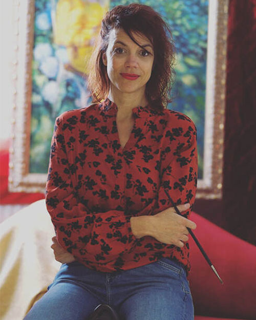
Yvonne omschrijft haar werk als schilderijen over sterke vrouwen, waarbij de vrouw duidelijk centraal staat. Haar olieverfschilderijen vertellen over haar ervaringen en over de wereld zoals zij die waarneemt.
Ik heb Yvonne ongeveer vijftien jaar geleden leren kennen. We zijn zielsverwanten en delen een liefde voor schoonheid, materiaal en het maken van dingen die kloppen. Van daaruit ben ik haar werk gaan inlijsten en ontstond een samenwerking die in de loop der jaren alleen maar rijker werd.
Mooie sterke vrouw. Puur en onbevangen. Slim, lief en dapper.

Een voorbeeld waarin de lijst het werk ondersteunt zonder de verstilling te breken.

Een handgemaakte tabernakellijst die extra diepte en een sacrale rust aan het werk geeft.

Een bijzonder moment waarin schilderij en lijst samen het verschil moesten maken.

Erik noemt zichzelf een imprealist en schildert graag figuratief werk met een vlotte toets in olieverf. Ik heb Erik leren kennen via de schilderschool en sindsdien verschillende werken voor hem mogen inlijsten.
Hij schildert met bezieling en dat zie je terug in zijn werk. Hij weet de ziel van mensen te vangen en met veel gevoeligheid de essentie weer te geven. Dat vraagt om lijsten die wel karakter hebben, maar het werk niet dichtdrukken.
Ook bij zijn schilderijen zie je meteen hoe bepalend de laatste omlijstende keuze is voor de totale uitstraling van het werk.
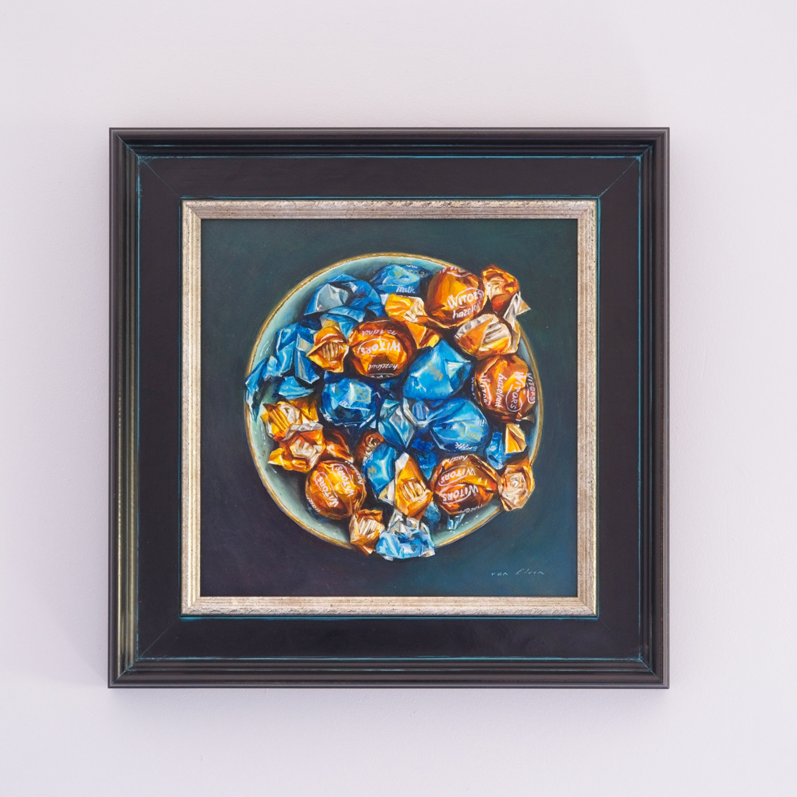
Een heldere, rustige lijst die kleur en spanning in het werk goed laat ademen.
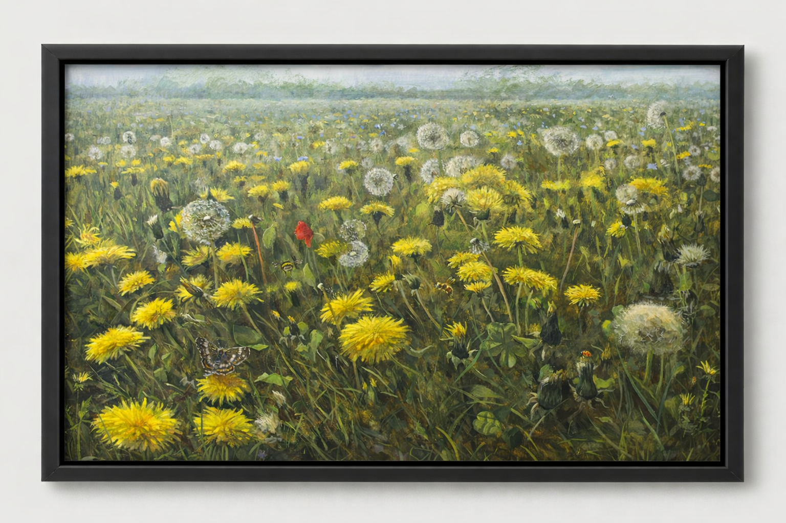
Een rijk, licht schilderij waarin een sobere donkere lijst het beeld laat ademen en de kleuren extra laat spreken.
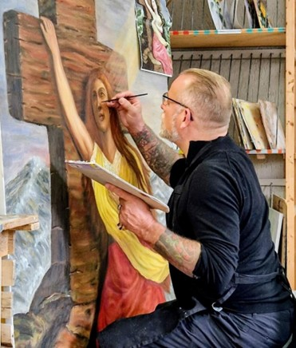
Marco Bratt uit Noordwijk is internationaal bekend als tattoo-artiest, maar maakt daarnaast indrukwekkend werk op doek. Zijn schilderijen zijn krachtig en expressief, met Bijbelse thema's, dramatiek en symboliek in een heel eigen stijl.
Ik vind het bijzonder om voor deze werken de lijsten te mogen verzorgen. Bij zulke uitgesproken schilderijen moet een lijst karakter hebben, maar het beeld niet overheersen. De omlijsting moet de intensiteit versterken en tegelijk rust geven.
Marco is een gedreven kunstenaar met een groot hart en een aanstekelijke lach. Zijn werk nodigt uit om langer te kijken.
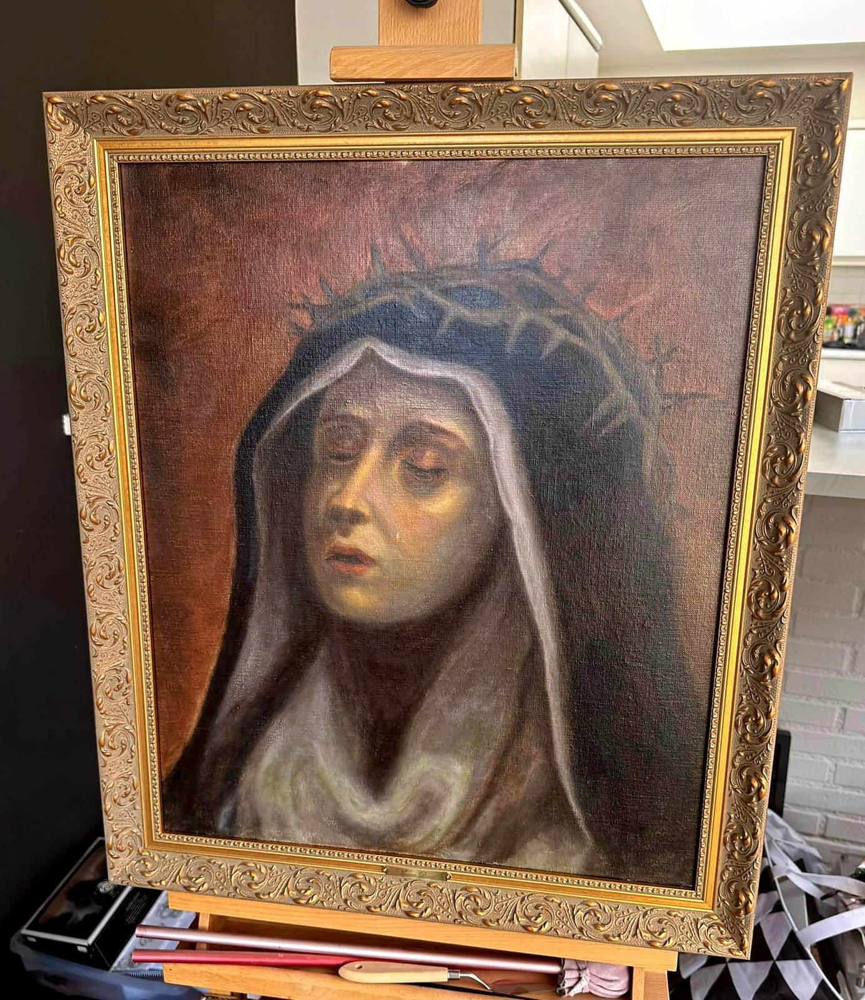
Een verstild, devotioneel portret met warme, donkere tonaliteit. De rijk geornamenteerde lijst verdiept het sacrale karakter en ondersteunt de intieme expressie van het werk.
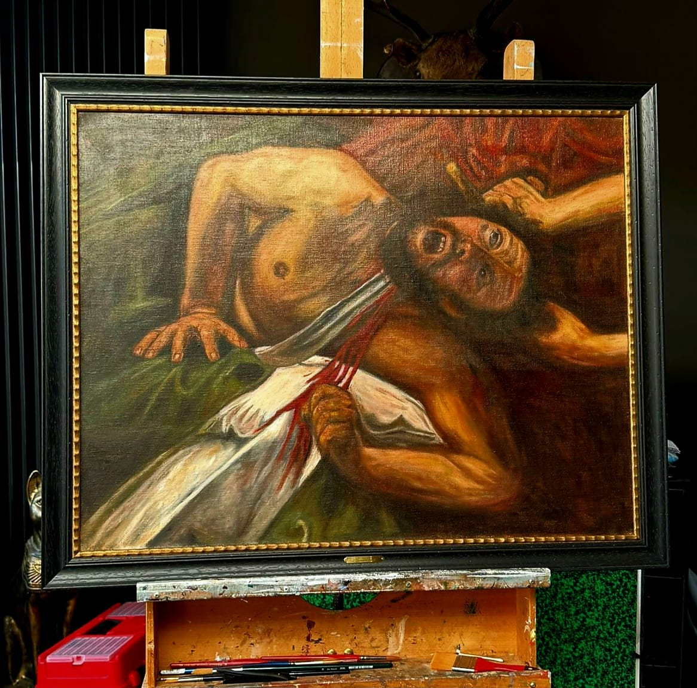
Een rauwe, monumentale compositie vol beweging en emotionele spanning. De donkere omlijsting houdt de energie bijeen en laat de dramatische beeldtaal krachtig binnenkomen.
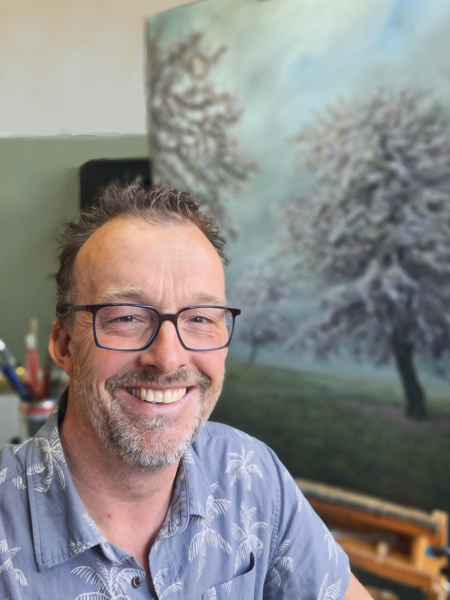
Graag stel ik Mike Woning voor, schilder en natuurliefhebber. In een drukke wereld zoekt hij in zijn werk juist naar rust, ruimte en verstilling. Zijn inspiratie vindt hij buiten: dramatisch licht, grote vormen, fonkelend water en soms juist de ongeorganiseerde chaos van de natuur.
Vaak begint hij met een plein air-schets, die hij later in zijn atelier uitwerkt. Van een afstand oogt zijn werk realistisch, maar van dichtbij zie je de levendige toets van de schilder. Mike kijkt met aandacht naar details die anderen vaak voorbijgaan. Juist daarom vind ik het bijzonder om zijn werk in te lijsten: de juiste omlijsting versterkt die rust en laat zijn schilderijen nog meer spreken.
Slow down. Breathe. And connect.
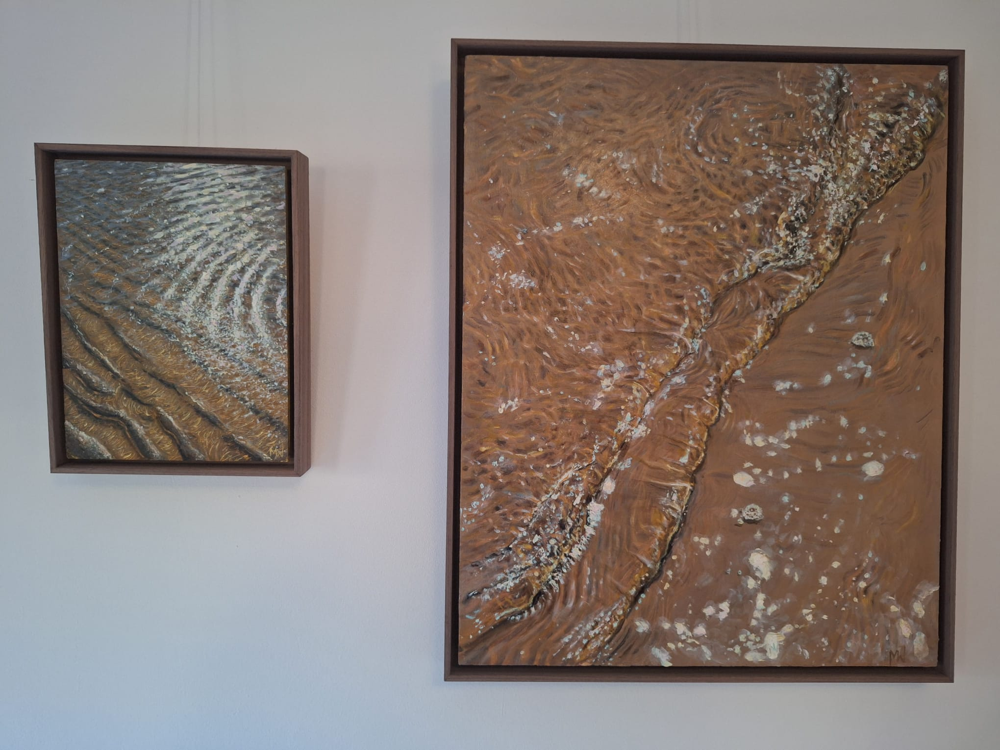
Twee krachtige composities in warme aardetonen, zogenaamd zwevend ingelijst in een donkere baklijst. De omlijsting geeft diepte en rust, terwijl de beweging in het verfoppervlak volledig zichtbaar blijft.
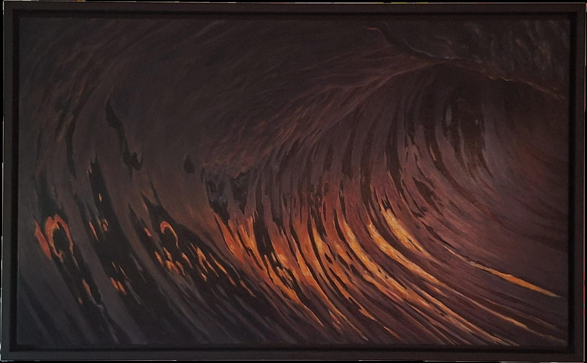
Een dramatische, bijna muzikale golfbeweging met gloed van binnenuit. Ook hier is gekozen voor een zogenaamd zwevende inlijsting, zodat het werk spanning houdt zonder zwaar te worden.
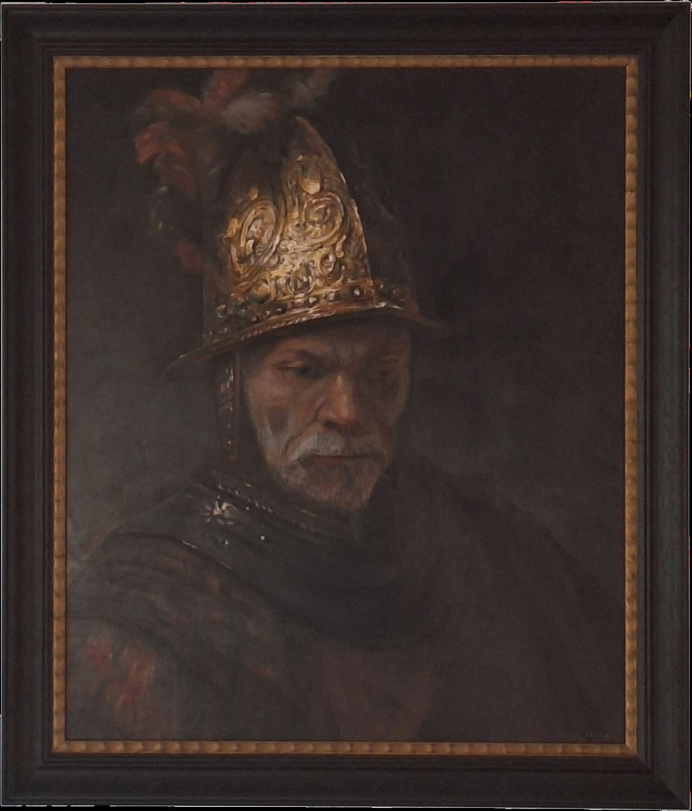
Een ingetogen portret met historische lading, gedragen door een klassieke lijst met warme binnenrand. De traditionele omlijsting versterkt het tijdloze karakter en houdt de blik gefocust op expressie en stilte.
Neem gerust contact op voor een afspraak in het atelier. Dan kijken we samen welke omlijsting uw werk versterkt, beschermt en passend presenteert.